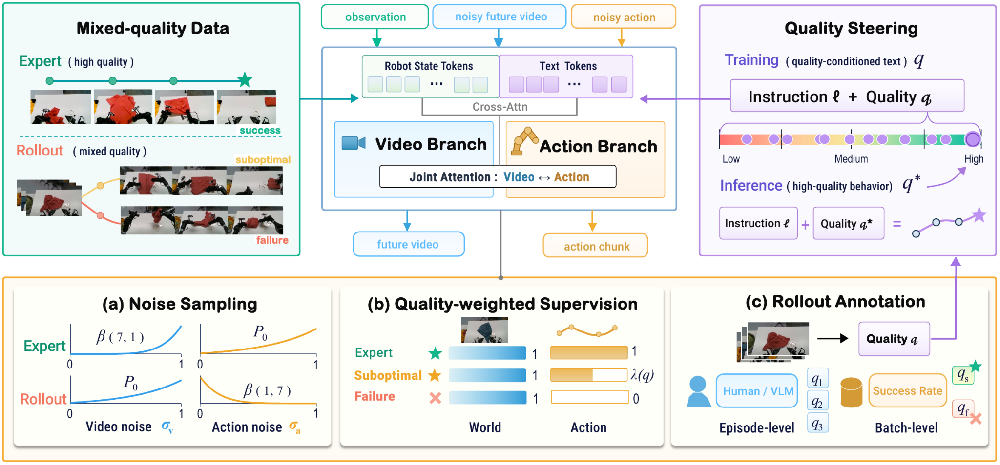

Closed-Loop Generalist Policy Improvement from Deployment Rollouts
Closed-loop self-improvement
LoopWAM turns real-world experience into better robot policies. By learning from successful, suboptimal, and failed rollouts alongside expert demonstrations, it closes the loop between deployment and improvement.
Method and key techniques

Joint video–action modeling
Video and action tokens interact through bidirectional attention throughout joint denoising.
Source-dependent noise
Lower-noise rollout actions guide video prediction to learn their observed physical consequences.
Quality-aware learning
Quality conditions and weights guide action learning. Every rollout teaches video prediction, without imitating failed actions.
01
Real-world and simulation leaderboards
Best overall performance among the methods compared in our paper on three benchmarks.
43.33%
RoboChallenge Table30-V2
Real-world success
94.5%
RoboTwin 2.0
Average success
49.5%
RoboCasa365
Overall success
02
Multi-task self-improvement
30 tasks. Four embodiments. One multi-task model per embodiment, improving through three rounds of real-world deployment.
Multi-task deployment and rollout data feedback.
RoboChallenge success rate
43.33%
Round 3+19.66 pp
60%30%0
Performance across multiple deployment rounds
Multi-embodiment results after self-improvement
ALOHA
Lint RollerSpread JamPut Books BackScoop with a SpoonStamp PositioningWipe BlackboardWrap with Cloth
ARX5
Arrange FlowersHang the CupPick Green BlocksPress the ButtonLight SwitchWater FlowersWipe the Table
UR5
Arrange FruitsItem ClassificationShred Paper
DOS-W1
Hold the TrayDesk DrawerPen ContainerPut Shoes BackStack BowlsSweep the TrashMakeup TableTie a Knot
03
Post-training self-improvement on a challenging task
After expert post-training, two rounds of deployment-driven learning improve the DOS-W1 model on challenging shirt folding.
Shirt-folding success rate
55.56%
Stage 3+42.36 pp
60%30%0
Evaluation success rates. Trajectory demos below play at 4× speed.
Deployment Stage 1
The deployed model is trained on expert demonstrations.